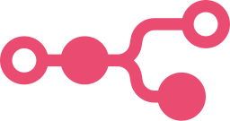
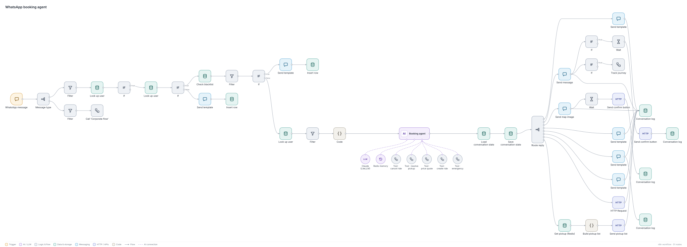
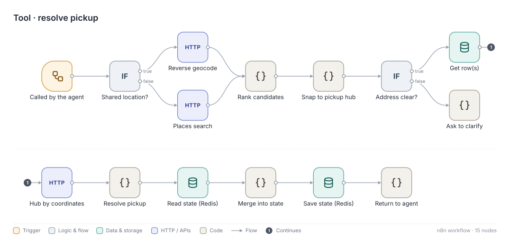
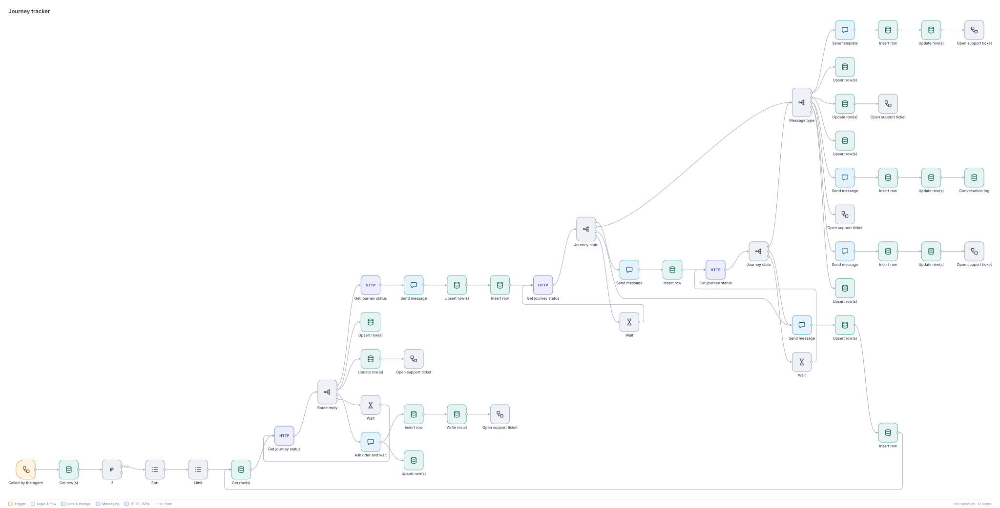

Case study · Cabify Spain · Mar to Aug 2026
WhatsApp Ride-Booking AI Agent
People at a stadium, a concert or a station who do not have the app can still get a car: scan a QR code, chat on WhatsApp, get a price and confirm. Behind it is a Claude agent in n8n that runs the conversation, and a set of deterministic workflows that book, track, invoice and escalate.

n8nThe rider's side
Scan a QR code, accept the terms, send an origin and a destination by text or live location, walk to a fixed pickup point, see the price and confirm. The agent creates the ride, sends driver updates as the trip progresses, delivers the invoice PDF on WhatsApp and opens a support ticket if something goes wrong.
How it is built
- Deterministic replies. The model does not write the WhatsApp message. It emits a marker, and a switch picks one of seven templates. That removed a whole class of formatting errors, and it means buttons always work.
- State outside the model. A 15-minute Redis session keeps the last 25 messages, and a data table logs every conversation.
- Addresses. One tool decides between a places search and reverse geocoding depending on what the rider sent, ranks the candidates and snaps to the nearest allowed pickup hub, then stores it in the session.
- Rules in code, not in the prompt. The free cancellation window, the trip limit per user, the blacklist and the daily message cap per number are enforced before or after the model, never by asking it nicely.
- After the booking. A tracker polls the ride every 10 seconds, sends a message at each milestone and asks the rider when something looks wrong. The invoice is read from the mailbox and sent as a PDF.
| Marker | What the rider gets |
|---|---|
| Welcome | Terms with accept and read buttons |
| Free text | A normal chat reply |
| Price | Quote with confirm and change buttons |
| Free cancellation | Inside the 120-second window |
| Exceptional cancellation | Outside the window, explains the conditions |
| Help | Hands over to support with the conversation |
| Ask for location | WhatsApp's native location request |



Results, and what limits them
The system worked end to end from May: on 14 May it took the company's first ride booked, tracked and invoiced with nobody in the loop. A first stadium pilot turned 25 conversations into 5 completed rides over four days. A B2B variant lets corporate accounts ask for immediate rides the same way.
Volume stayed small afterwards because the QR codes were handed out manually. The bottleneck is getting the code in front of people, not the agent, so that is where the next iteration starts. A weekly dashboard, rebuilt by a Claude skill, tracks the funnel from scan to ride.
What I learned
- Letting the model choose the next step and code choose the message was the single change that made it reliable.
- Guards are cheap, and they belong in the first release rather than after the first abuse.
Numbers, venue names and account details are left out on purpose. The conversation above is illustrative.